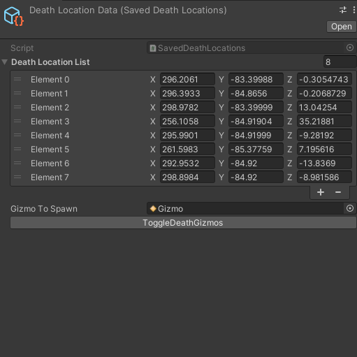

Log 1 - "BOXXED Test Stats"
For my BOXXED project, I implemented player statistics mechanics. This let me record what happened during playtests and identify where players had problems.
With the help of this tool, I could resolve issues and adjust the difficulty more easily.